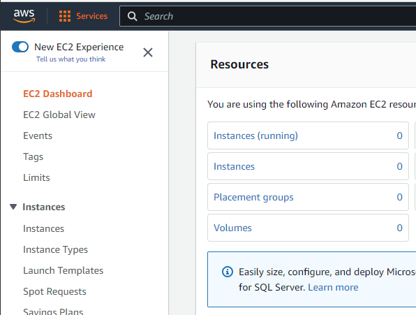
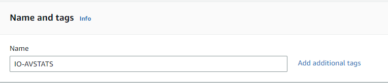
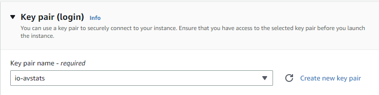
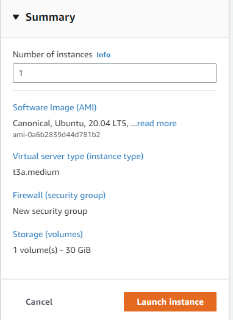
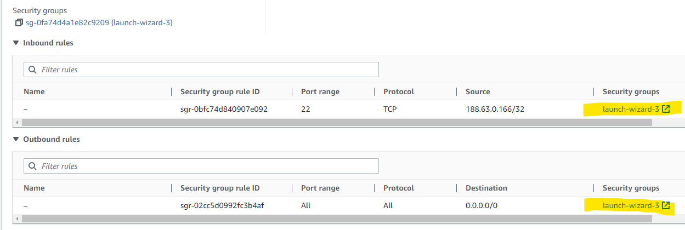
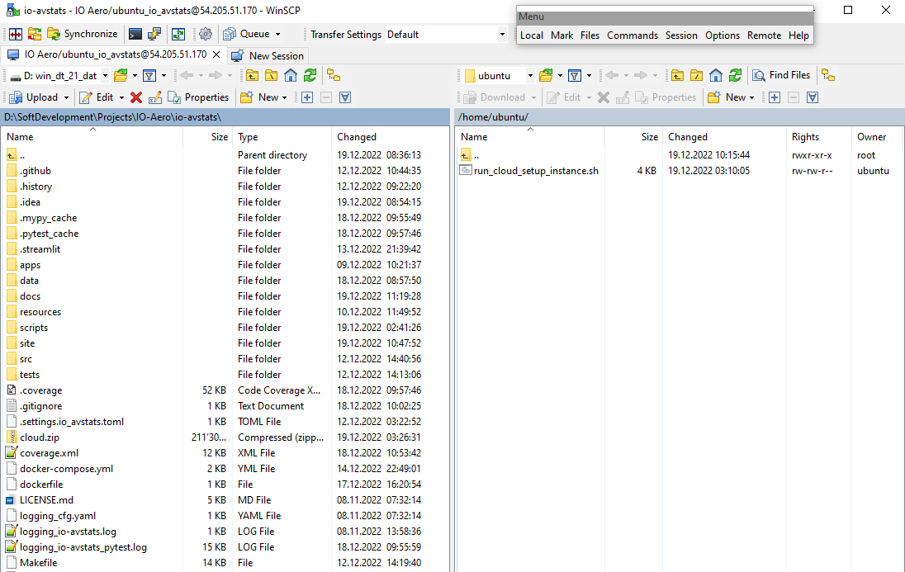
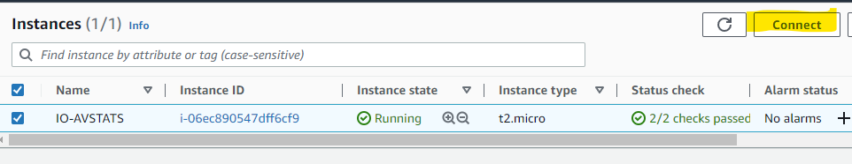

How to set up an AWS instance
Creating an AWS instance requires access to an AWS account as a root user or as an IAM user with appropriate permissions.
IO-AVSTATS can be run on EC2 instances by default. The EC2 instances are managed on the EC2 Dashboard.

1. Instance creation
On the EC2 dashboard, select Instances and then Launch instance.

1.1 Name and tags
IO-AVSTATS

1.2 Application and OS Images
Ubuntu Server 20.04 LTS (HVM), SSD Volume Type

1.3 Instance type
t3a.medium

1.4 Key pair (login)
- Either choose an existing one or create a new one.

1.5 Network settings

1.6 Configure Storage
- 1x
30GiB

1.7 Launch instance

2. Open port numbers
Each Streamlit application must be assigned its own port number so that they can run simultaneously. Currently, the following Streamlit applications are supported:
| Port | Application |
|---|---|
| 8501 | aaus1982 - Aircraft Accidents in the US since 1982 |
| 8502 | pdus1982 - Profiling Data for the US since 1982 |
2.1 Determine the security
To determine the security group assigned to the intance: on the EC2 dashboard, select Instances and then Security.

2.2 Choose the security group
To choose the security group assigned to the instance: on the EC2 dashboard, select Security Groups and Security.

2.3 Open the port numbers
For each streamline application port number press Add rule and enter the data.

2.4 Finsh with Save rules

3. Upload installation script
On Windows, the WinSCP program can be used to upload data from the local system to the AWS Cloud.
The script to be uploaded is called run_cloud_setup_instance.sh.


4. Run installation script
4.1 Load terminal window



4.2 run_cloud_setup_instance
chmod +x run_cloud_setup_instance.sh
./run_cloud_setup_instance.sh
Example protocol:
ubuntu@ip-172-31-89-93:~$ chmod +x run_cloud_setup_instance.sh
ubuntu@ip-172-31-89-93:~$ ./run_cloud_setup_instance.sh
==============================================================================
Start ./run_cloud_setup_instance.sh
------------------------------------------------------------------------------
DATE TIME : 19.12.2022 10:49:15
==============================================================================
Supplement necessary system software
------------------------------------------------------------------------------
Hit:1 http://us-east-1.ec2.archive.ubuntu.com/ubuntu focal InRelease
Get:2 http://us-east-1.ec2.archive.ubuntu.com/ubuntu focal-updates InRelease [114 kB]
Get:3 http://us-east-1.ec2.archive.ubuntu.com/ubuntu focal-backports InRelease [108 kB]
Get:4 http://security.ubuntu.com/ubuntu focal-security InRelease [114 kB]
Get:5 http://us-east-1.ec2.archive.ubuntu.com/ubuntu focal/universe amd64 Packages [8628 kB]
Get:6 http://us-east-1.ec2.archive.ubuntu.com/ubuntu focal/universe Translation-en [5124 kB]
Get:7 http://us-east-1.ec2.archive.ubuntu.com/ubuntu focal/universe amd64 c-n-f Metadata [265 kB]
Get:8 http://us-east-1.ec2.archive.ubuntu.com/ubuntu focal/multiverse amd64 Packages [144 kB]
Get:9 http://us-east-1.ec2.archive.ubuntu.com/ubuntu focal/multiverse Translation-en [104 kB]
Get:10 http://us-east-1.ec2.archive.ubuntu.com/ubuntu focal/multiverse amd64 c-n-f Metadata [9136 B]
Get:11 http://us-east-1.ec2.archive.ubuntu.com/ubuntu focal-updates/main amd64 Packages [2269 kB]
Get:12 http://us-east-1.ec2.archive.ubuntu.com/ubuntu focal-updates/main Translation-en [395 kB]
Get:13 http://us-east-1.ec2.archive.ubuntu.com/ubuntu focal-updates/main amd64 c-n-f Metadata [16.1 kB]
Get:14 http://us-east-1.ec2.archive.ubuntu.com/ubuntu focal-updates/restricted amd64 Packages [1476 kB]
Get:15 http://us-east-1.ec2.archive.ubuntu.com/ubuntu focal-updates/restricted Translation-en [208 kB]
Get:16 http://us-east-1.ec2.archive.ubuntu.com/ubuntu focal-updates/restricted amd64 c-n-f Metadata [592 B]
Get:17 http://us-east-1.ec2.archive.ubuntu.com/ubuntu focal-updates/universe amd64 Packages [1009 kB]
Get:18 http://us-east-1.ec2.archive.ubuntu.com/ubuntu focal-updates/universe Translation-en [234 kB]
Get:19 http://us-east-1.ec2.archive.ubuntu.com/ubuntu focal-updates/universe amd64 c-n-f Metadata [23.2 kB]
Get:20 http://us-east-1.ec2.archive.ubuntu.com/ubuntu focal-updates/multiverse amd64 Packages [24.5 kB]
Get:21 http://us-east-1.ec2.archive.ubuntu.com/ubuntu focal-updates/multiverse Translation-en [7380 B]
Get:22 http://us-east-1.ec2.archive.ubuntu.com/ubuntu focal-updates/multiverse amd64 c-n-f Metadata [592 B]
Get:23 http://us-east-1.ec2.archive.ubuntu.com/ubuntu focal-backports/main amd64 Packages [45.7 kB]
Get:24 http://us-east-1.ec2.archive.ubuntu.com/ubuntu focal-backports/main Translation-en [16.3 kB]
Get:25 http://us-east-1.ec2.archive.ubuntu.com/ubuntu focal-backports/main amd64 c-n-f Metadata [1420 B]
Get:26 http://us-east-1.ec2.archive.ubuntu.com/ubuntu focal-backports/restricted amd64 c-n-f Metadata [116 B]
Get:27 http://us-east-1.ec2.archive.ubuntu.com/ubuntu focal-backports/universe amd64 Packages [24.9 kB]
Get:28 http://us-east-1.ec2.archive.ubuntu.com/ubuntu focal-backports/universe Translation-en [16.3 kB]
Get:29 http://us-east-1.ec2.archive.ubuntu.com/ubuntu focal-backports/universe amd64 c-n-f Metadata [880 B]
Get:30 http://us-east-1.ec2.archive.ubuntu.com/ubuntu focal-backports/multiverse amd64 c-n-f Metadata [116 B]
Get:31 http://security.ubuntu.com/ubuntu focal-security/main amd64 Packages [1895 kB]
Get:32 http://security.ubuntu.com/ubuntu focal-security/main Translation-en [311 kB]
Get:33 http://security.ubuntu.com/ubuntu focal-security/main amd64 c-n-f Metadata [11.5 kB]
Get:34 http://security.ubuntu.com/ubuntu focal-security/restricted amd64 Packages [1385 kB]
Get:35 http://security.ubuntu.com/ubuntu focal-security/restricted Translation-en [195 kB]
Get:36 http://security.ubuntu.com/ubuntu focal-security/restricted amd64 c-n-f Metadata [596 B]
Get:37 http://security.ubuntu.com/ubuntu focal-security/universe amd64 Packages [778 kB]
Get:38 http://security.ubuntu.com/ubuntu focal-security/universe Translation-en [150 kB]
Get:39 http://security.ubuntu.com/ubuntu focal-security/universe amd64 c-n-f Metadata [16.8 kB]
Get:40 http://security.ubuntu.com/ubuntu focal-security/multiverse amd64 Packages [22.2 kB]
Get:41 http://security.ubuntu.com/ubuntu focal-security/multiverse Translation-en [5464 B]
Get:42 http://security.ubuntu.com/ubuntu focal-security/multiverse amd64 c-n-f Metadata [516 B]
Fetched 25.2 MB in 4s (5617 kB/s)
Reading package lists...
...
=============================================================================> Version Docker Compose:
Current version of Docker Compose: docker-compose version 1.25.0, build unknown
docker-py version: 4.1.0
CPython version: 3.8.10
OpenSSL version: OpenSSL 1.1.1f 31 Mar 2020
==============================================================================
=============================================================================> Version Docker Desktop:
Current version of Docker Desktop: Client: Docker Engine - Community
Version: 20.10.22
API version: 1.41
Go version: go1.18.9
Git commit: 3a2c30b
Built: Thu Dec 15 22:28:08 2022
OS/Arch: linux/amd64
Context: default
Experimental: true
Server: Docker Engine - Community
Engine:
Version: 20.10.22
API version: 1.41 (minimum version 1.12)
Go version: go1.18.9
Git commit: 42c8b31
Built: Thu Dec 15 22:25:58 2022
OS/Arch: linux/amd64
Experimental: false
containerd:
Version: 1.6.13
GitCommit: 78f51771157abb6c9ed224c22013cdf09962315d
runc:
Version: 1.1.4
GitCommit: v1.1.4-0-g5fd4c4d
docker-init:
Version: 0.19.0
GitCommit: de40ad0
==============================================================================
=============================================================================> Version dos2unix:
Current version of dos2unix: dos2unix 7.4.0 (2017-10-10)
With Unicode UTF-16 support.
With native language support.
With support to preserve the user and group ownership of files.
LOCALEDIR: /usr/share/locale
http://waterlan.home.xs4all.nl/dos2unix.html
==============================================================================
=============================================================================> Version unzip:
Current version of unzip: UnZip 6.00 of 20 April 2009, by Debian. Original by Info-ZIP.
Latest sources and executables are at ftp://ftp.info-zip.org/pub/infozip/ ;
see ftp://ftp.info-zip.org/pub/infozip/UnZip.html for other sites.
Compiled with gcc 9.4.0 for Unix (Linux ELF).
UnZip special compilation options:
ACORN_FTYPE_NFS
COPYRIGHT_CLEAN (PKZIP 0.9x unreducing method not supported)
SET_DIR_ATTRIB
SYMLINKS (symbolic links supported, if RTL and file system permit)
TIMESTAMP
UNIXBACKUP
USE_EF_UT_TIME
USE_UNSHRINK (PKZIP/Zip 1.x unshrinking method supported)
USE_DEFLATE64 (PKZIP 4.x Deflate64(tm) supported)
UNICODE_SUPPORT [wide-chars, char coding: UTF-8] (handle UTF-8 paths)
LARGE_FILE_SUPPORT (large files over 2 GiB supported)
ZIP64_SUPPORT (archives using Zip64 for large files supported)
USE_BZIP2 (PKZIP 4.6+, using bzip2 lib version 1.0.8, 13-Jul-2019)
VMS_TEXT_CONV
WILD_STOP_AT_DIR
[decryption, version 2.11 of 05 Jan 2007]
UnZip and ZipInfo environment options:
UNZIP: [none]
UNZIPOPT: [none]
ZIPINFO: [none]
ZIPINFOOPT: [none]
==============================================================================
--------------------------------------------------------------------------------
DATE TIME : 19.12.2022 10:50:52
--------------------------------------------------------------------------------
End ./run_cloud_setup_instance.sh
================================================================================